Assignment 2
Due Wednesday September 12th at 10 AM
The demo for this assignment can be found here:
https://courses.csail.mit.edu/6.s198/spring-2018/model-builder/src/model-builder/
1.1: Building models with model builder (In-class Monday)
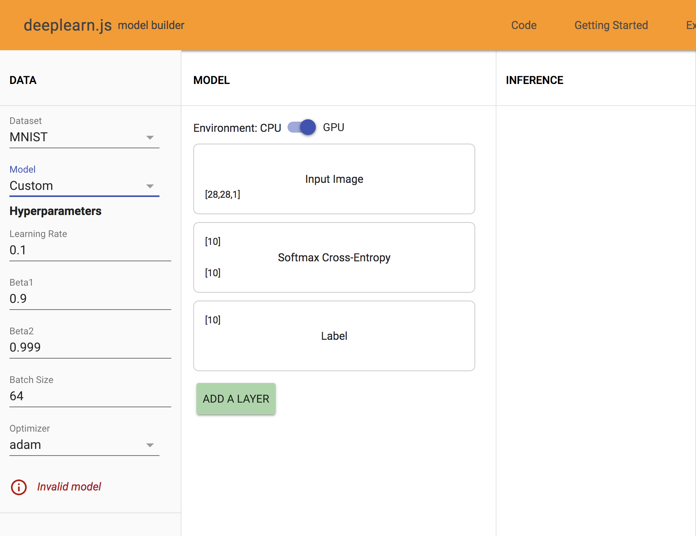
On the leftmost column of Model Builder, the initial model is marked Invalid Model. This model is invalid as the output from the Input Image layer ([28,28,1]) does not match with the input of the Softmax Cross-Entropy layer layer ([10]).
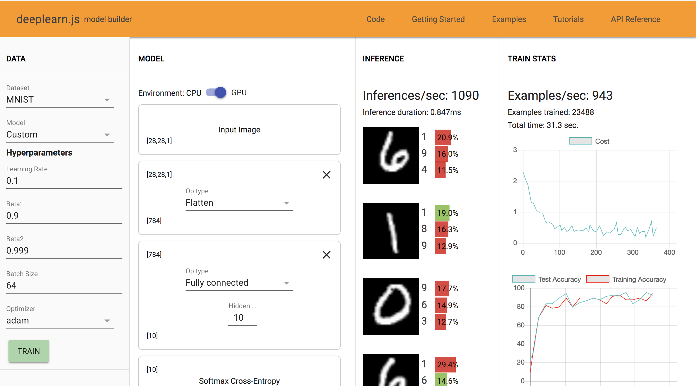
Problem 1: The classifications above that we are seeing are almost always wrong. This is because the parameters as part of the equation Wx + b are randomly initialized and not trained further to find optimal values. Hence we see that the network has a classfication rate of approx 10-15%, which is what would be expect as it equivalent to choosing a label at random from the 10 options avaliable.
1.2: Training
Problem 2:
1. Here are the observations made for training MNIST, CIFAR-10, and Fashion MNIST respectively:
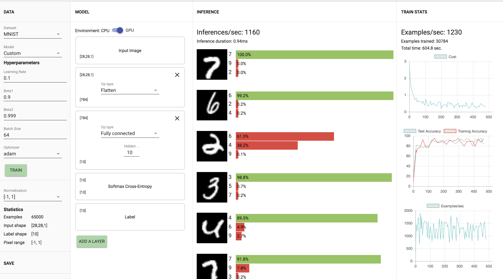
MNIST: Training accuracy ranges from 80%-92% with the demo making approximately 1170 inferences per second. The model trains 1230 examples/second as shown in the visuals above.
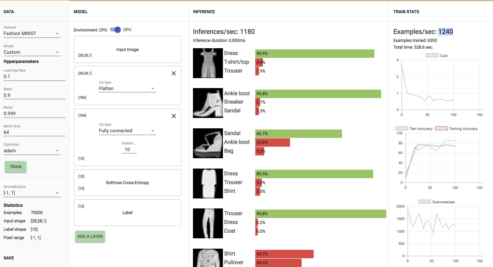
Fashion MNIST: Training accuracy ranges from 73%-76% with the demo making approximately 1250 inferences per second. The model trains 1240 examples/second as shown in the visuals above.
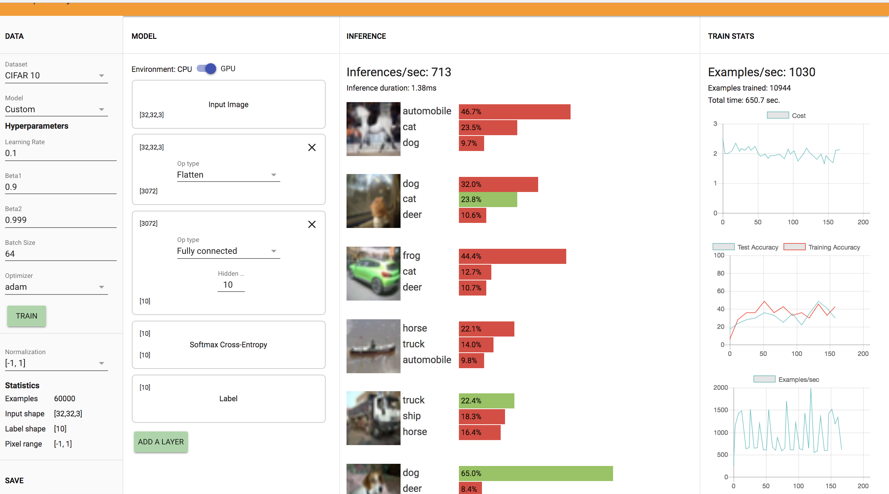
2. After changing the dataset to CIFAR-10, I observed a training accuracy ranging from 32%-45% with the demo making approximately 705 inferences per second. The model trains 1030 examples/second as shown in the visuals above.
3. The Fully Connected Unit layer Added is shown here:
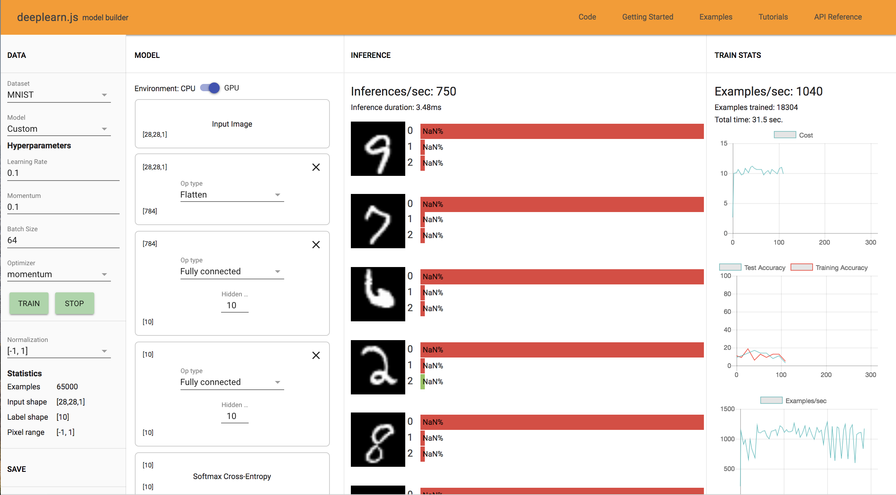
4. Changing back to MNIST, we try to improve the accuracy by adding more fully connected units, one on top of the other as such: Input → Flatten → FC(10) → FC(10) → Softmax → Label
The accuracy goes to zero and the network performs terribly. The inference probability also becomes Nan% for the images. This is due to having two Fully Connected Layers one after the other in the network, which causes the network to diverge and leads to exploding gradients. In order to correct this, we should add a non-linear layer such as RELU instead of putting two linear layers one after the other.
1.4: Activation Layers
Problem 3:
Instead of adding two Fully Connected Layers one after the other, we add a ReLU layer between the FC layers to make:
Input → Flatten → FC(10) → ReLU → FC(10) → Softmax → Label
After the training the new model, we see a training accuracy 62%-78% of and a testing accuracy 57%-76% as shown below. There are no more Nan values as well. You can see further train statistics below:
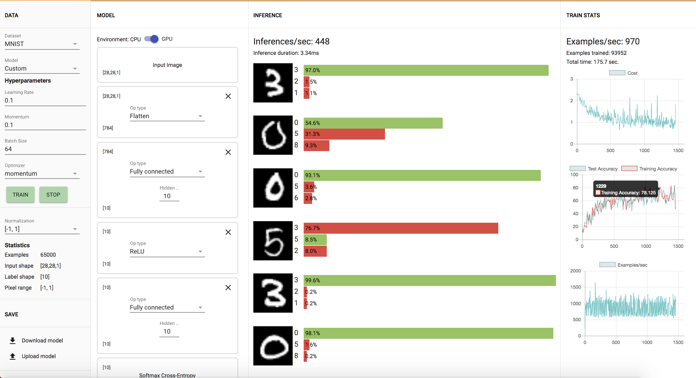
However after increasing the number of units of the first FC model from 10 to 100, we see a noticable difference as seen below. The training and test accuracy is approximately 93%-98%, much higher than previously. There is a noticable difference as you increase the time given for training the network.
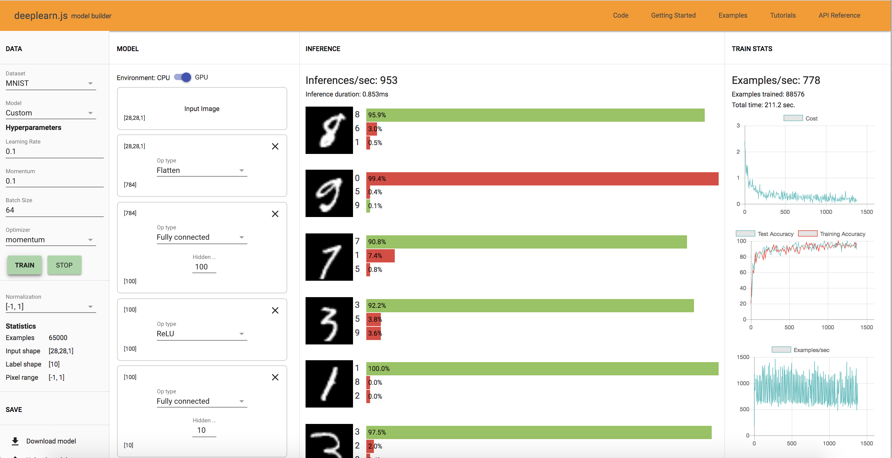
1.6: Exploring with Model Builder
Problem 4:
1. After training the MNIST model with 1,2,3,4 and 5 FC layers (and ReLU between them and the same hyperparameters and number of hidden units) for approximately 30,000 examples, I found a training time and acccuracy time of the following:
1 FC Layer: Training Time: 48.5 sec, Accuracy: 85%
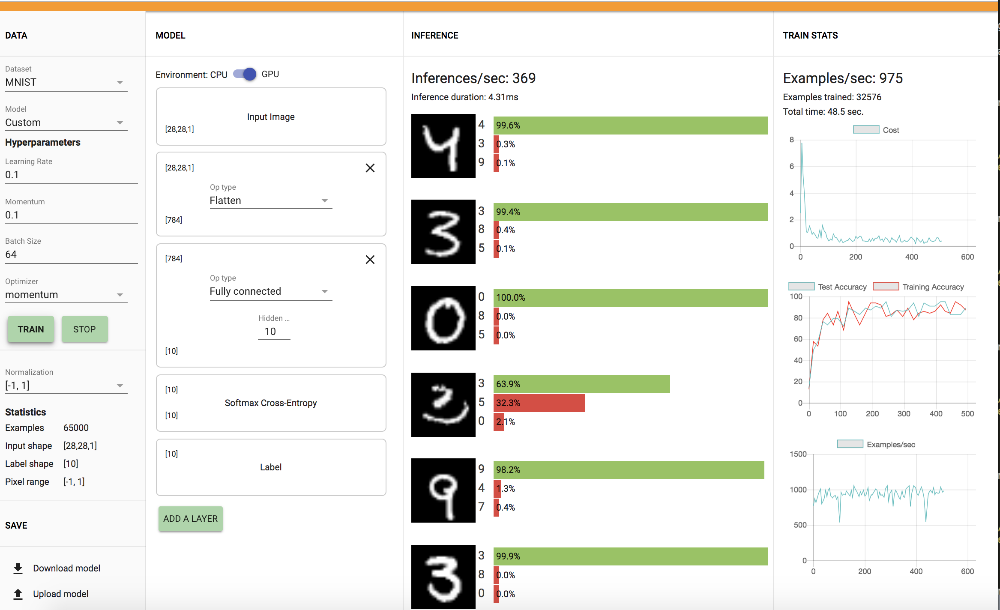
2 FC Layer: Training Time: 57.0 sec, Accuracy: 60%
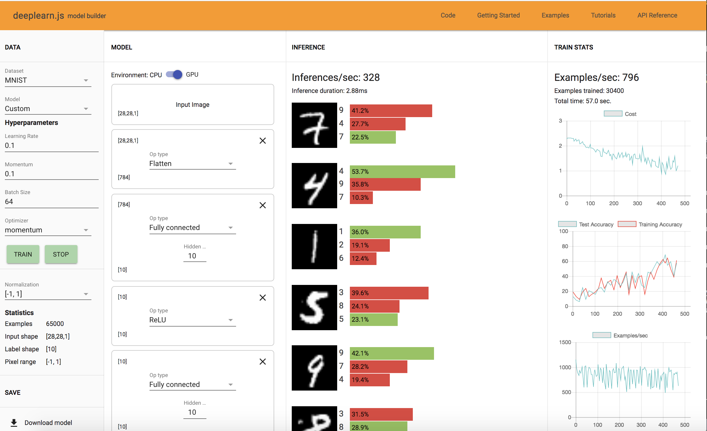
3 FC Layer: Training Time: 83 sec, Accuracy: 80%
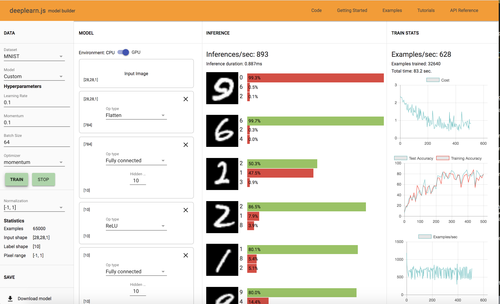
4 FC Layer: Training Time: 106.4 sec, Accuracy: 82%
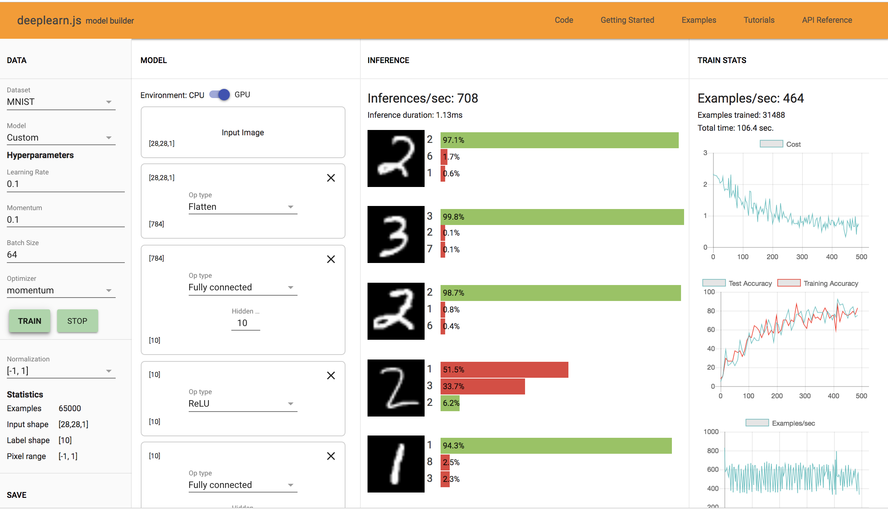
5 FC Layer: Training Time: 114.1 sec, Accuracy: 60-70%
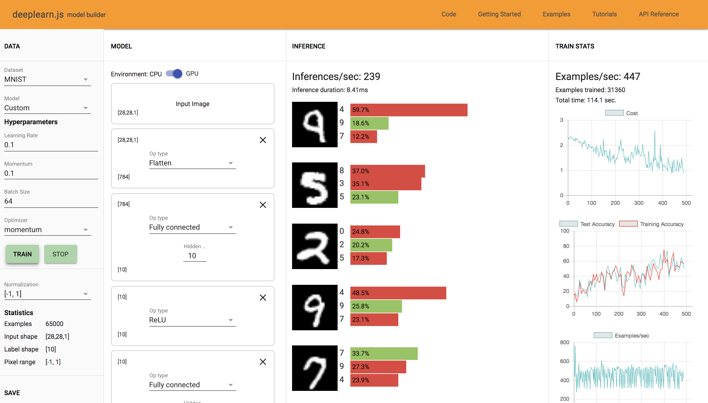
I did observe overfitting when the training accuracy overshot the test accuracy.
2. I built a model with 3 FC layers, with ReLU between them, and made the first layer wide and the second narrow, and vice versa, using the same hyperparameters as before. I found the network with the first layer being wide and the second narrow to perform better. This is probably because the network is more general in the beggining and needs to explore all regions before looking for more specific features which requires a smaller layer.
3. After trying the same procedure with the Fashion MNIST and CIFAR-10 datasets, I observed that it took longer to achieve high accuracy for the Fashion MNIST Dataset with more layers as well as the CIFAR-10 Dataset.
2.1: Setting Up to code Multilayer Models
Problem 5:
As you increase the NUM_BATCHES from 50 to 300, the loss converges to a lower value. Increasing the BATCH_SIZE does not cause any effect in the loss but causes less variation in the loss. In general, I see that as you increase on or the other the training time increases.
2.2: Training and Testing
TEST_ITERATION_FREQUENCY determines the number of batches the model trains on between tests. TEST_BATCH_SIZE determines how many images the test is run on each time.
Problem 6
1. Examples of classifications where the system does poorly/is wrong include when the numbers are bolded/have a thick font size or when they are not proportionate.

2. I experimented with changing the batch size and the number of batches to try to improve the testing results. Overall, I observed that increasing the batch size and the number of batches increases the last accuracy value. However, increasing both increases the time in which it takes to train the model, so I tried to find combinations that would bring similar results.
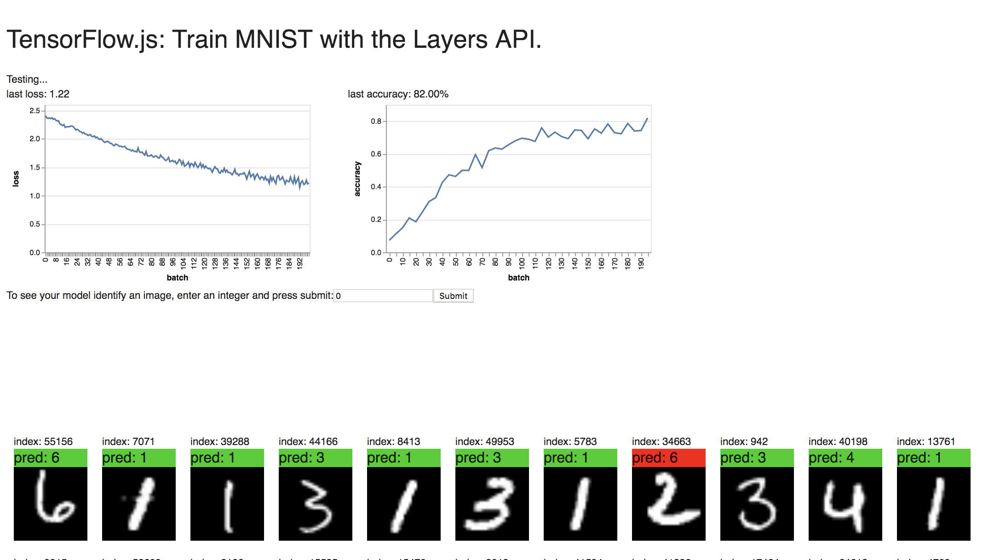
Below you can see the highly last accuracy value of 82% with a batch size of 300 and a number of batches value of 200. This accuracy value is pretty consistent for high values of these two variables. However when the batch size is 30 and the number of batches value is 100, we get an accuracy value of 80% although this is not a very consistent result.
I also tried a batch size of 30 and a high number of batches value of 200 and got an accuracy result of 96.67%.
3. To add a ReLU layer after a dense layer, use the dense layer’s activation parameter, rather than explicitly adding a separate layer, as the following:
model.add(tf.layers.dense({
units: 10,
activation: 'relu',
kernelInitializer: 'varianceScaling'
}));
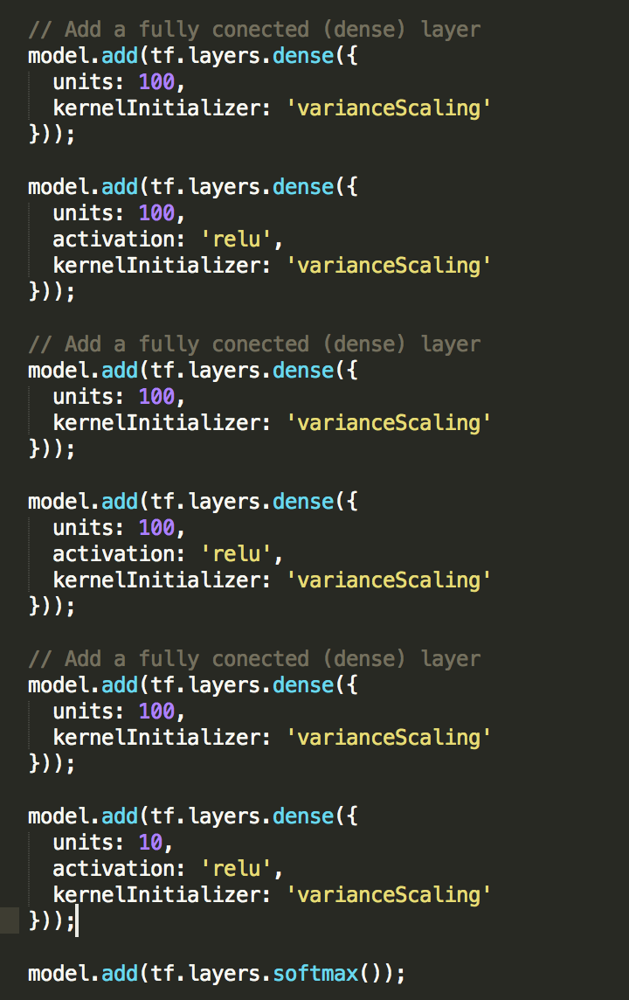
I made the model more complex by adding 2 more additional layers (3 Fully Connected layers of 100 units each, with RELU layers in between). I got an accuracy of 82% with a batch size value of 100 and a number of batches value of 300.
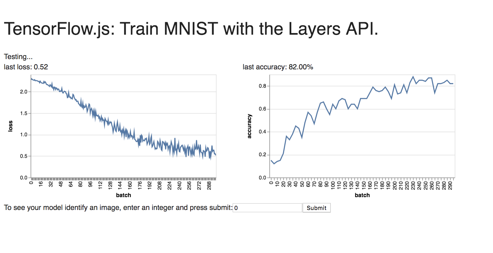
After exploring with MNIST, I tried the same network with the Fashion MNIST data (with higher values for the two parameters of 300 for batch size and 400 for the number of batches respectively) as shown below:
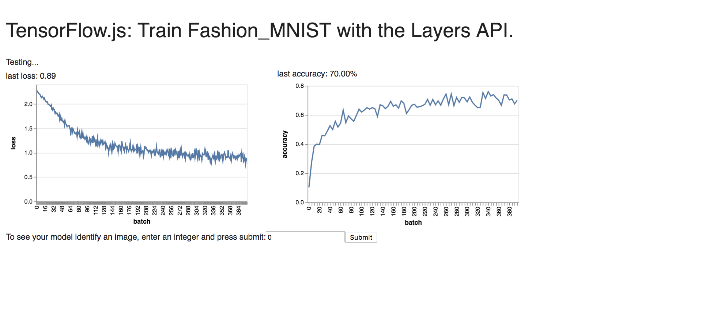
2.3: Style Transfer Example
Style transfer is an application of convolutional neural networks. Given a content image and a style (another image), we can apply a computation that transforms the content to match the selected style.
Here are some of the examples I created on DeepArt:
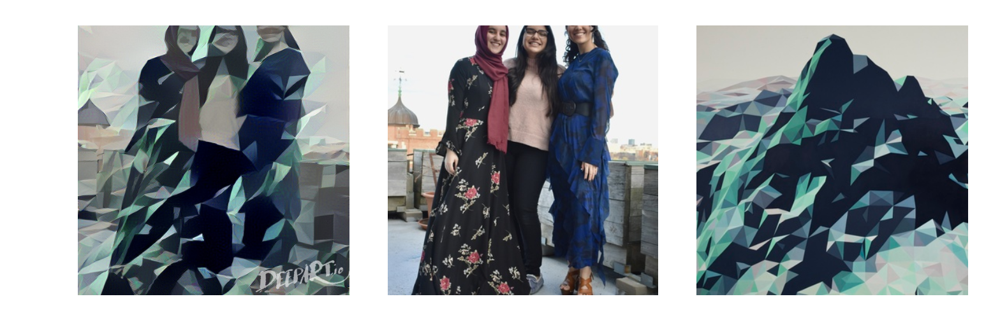